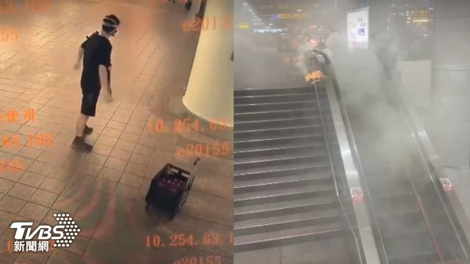

世界苦茶12月19日新闻 | 38条 | 美国对台军售超100亿美元

美国对台军售超100亿美元 | 台湾宪法法院裁定《宪法诉讼法》违宪 | 台北发生街头随机伤人案 | 泰国对柬埔寨持续进行空袭 | 海南全岛启动封关政策 | TikTok已签署协议，将其美国实体出售给美国投资者集团
苦茶数据
美元兑人民币：7.03（昨日7.03，前日7.03）
美元兑日元：157.47（昨日155.56，前日154.45）
上证指数：3890（昨日3876，前日3870）
标普500指数：6829（昨日6721，前日6800）
比特币：88722（昨日86790，前日87656）
布伦特原油：60.16（昨日60.05，前日59.83）
中国新闻
• 中国军方公开征集空军违规采购问题线索。
在北京持续推进军队反腐之际，中国军方罕见地公开征集有关空军违规采购问题的线索。“军队采购网”星期一发布《关于征集空军部队违规采购问题的公告》。公告称，为进一步畅通违规采购问题反馈渠道，广泛接受社会监督，现面向社会公开征集违规采购问题有关信息。军队采购网是解放军供应商获取投标信息的主要平台。《南华早报》报道称，该网站大约从去年开始定期发布警告，并公布对违反采购规定的相关单位和个人的处罚情况。这则星期一发布的公告内容简短，当中提到主要受理空军部队组织开展的物资、服务类采购活动有关违规问题，包括但不限于需求编制、采购评审、合同履约、供应商处罚、招标代理机构遴选、网上采购等。
• 中国据报已成功打造出EUV原型机 目前正在测试阶段。
据消息人士透露，中国科学家今年初在深圳一座高度保密的实验室，打造出一台极紫外光刻机的原型机，目前正在测试阶段。这项被形容为中国的“曼哈顿计划”，目标是要让中国最终能够在完全自主研发的设备上制造先进晶片。路透社星期四引述两名知情人士的消息报道，称这台原型机由荷兰半导体巨头阿斯麦的前工程师团队，通过逆向工程开发而成。这台设备已经可以运作并成功产生极紫外光，但尚未生产出可用的晶片。目前全世界只有阿斯麦掌握了极紫外光刻机的技术。今年4月，阿斯麦首席执行官克里斯托夫·富凯表示，中国还需要“许多、许多年”才能掌握这类技术。随着中国科学家已经成功打造出一台原型机，路透社报道指中国实现半导体自主的进程。
• 港货币兑换店职员被持刀劫匪抢走10亿日元现钞。
香港星期四早上发生巨额抢劫案，一家货币兑换店职员遭四名男子持刀抢劫，被抢走10亿日元现金；警方暂时逮捕了一名来自中国大陆、涉嫌行劫的男子。综合《明报》、《信报》、《星岛日报》等港媒报道，星期四上午约9时，香港警方接获一名货币兑换店职员报案，称与同事在港岛上环新纪元广场对面，遭四名持刀男子抢劫，并被抢去约10亿日元现钞。劫匪得手后，登上一辆七人座汽车逃走。两名受害人分别为39岁男子及50岁的香港男子，两人都是货币兑换店职员，均没有受伤。日元面额最大的钞票是1万日元，每张重约一克，10亿日元现钞的重量，相当于最少100公斤。报道称，两名货币兑换店职员当时拖着四个分装着10亿日元现钞的行李箱。
• 在泰国与柬埔寨交火之际，中国派遣特使前往调解。
柬埔寨和泰国告诉中国外长王毅，愿意停火 据中国外交部消息，柬埔寨和泰国在近期边界冲突后表示愿意降级局势并停止交火。柬埔寨外长兼副首相普拉克·索康和泰国外长西哈萨克·普昂凯乔分别于周四通过电话向中国外长王毅作出上述表态。两国外长就边界冲突的最新事态向王毅通报。王毅表示，作为“两国的朋友和近邻”，中国对本次冲突造成的严重平民伤亡深感痛惜，本轮冲突的强度已超过以往交火。“继续升级对任何一方都无益，也破坏东盟团结。当前当务之急是果断行动，尽快停止敌对行动，防止进一步伤亡，重建相互信任，”王毅说。同日，北京已派出特使赴泰国和柬埔寨开展和平方调工作。
• 中国外交部长王毅在美国施压加剧之际重申北京对委内瑞拉的支持。
中国外长王毅在美国施压加剧之际重申北京对委内瑞拉的支持。在与加拉加斯的对口人员通话中，这位中国外交部长表示，相互信任与支持是两国关系的传统。王毅告诉委内瑞拉外长伊万·希尔，中委是战略伙伴，相互信任和支持是双边关系的传统。中国外交部声明称，王毅还含蓄地指向美国，表示“中方反对一切形式的单边霸凌，支持各国维护主权和国家尊严”。
• 中国人大前副委员长王丙干葬礼 未见马兴瑞署名花圈。
中国全国人大常委会前副委员长、前国务委员兼财政部长王丙干12月8日逝世，享年100岁，遗体上星期天在广州火化。丧礼上未见中共政治局委员、新疆维吾尔自治区原党委书记马兴瑞署名的花圈。据新华社报道，王丙干病重期间和逝世后，中共政治局七常委习近平、李强、赵乐际、王沪宁、蔡奇、丁薛祥、李希、中国国家副主席韩正、中共前总书记胡锦涛等，前往医院看望或通过各种形式，对退休前官至副国级的王丙干逝世表示沉痛哀悼，并向亲属表示深切慰问。中国全国人大常委会委员长赵乐际等受中共中央委托，上星期天专程前往广州市殡仪馆为王丙干送别，并慰问亲属。
印太新闻
**• 台北车站、捷运中山站19日遇袭，共致包括嫌犯在内2死7伤，伤者中3人有生命危险。 **
嫌犯在17:23左右佩戴防毒面具前往台北车站，丢掷烟雾弹和汽油弹引发恐慌，一名54岁男性灭火时被烟雾呛伤；一名57岁男性为阻止嫌犯行凶遭钝器重击，失去意识，送医不治。嫌犯在台北车站作案后逃窜到新光三越南西店附近，有民众目击到现场烟雾弥漫，犯嫌还持刀闯入中山站诚品，导致7人受伤。遭警方包围后约从5、6层楼高一跃而下，当场失去生命迹象，送医后宣告死亡。台北大众捷运股份有限公司说，台北车站月台一度受烟雾影响执行过站不停，目前烟雾已消散，恢复正常营运。行政院长卓荣泰下令，全台车站、捷运、航空站保持戒备，并责令警政署尽速抓人。
• 台湾宪法法庭裁定《宪法诉讼法》违宪。
台湾，司法院5名大法官12月19日发表《114年宪判字第1号》判决，宣告去年底立法院对《宪法诉讼法》的修正违宪，包括“总统应于2个月内补充提名大法官缺额”“评议门槛10人，违宪判决门槛9人”“回避超过7人，则须全体出席，判决门槛3/4”等条文。理由包括违反权力分立原则、立法程序瑕疵。参与评议的5名大法官是谢铭洋、吕太郎、蔡彩贞、陈忠五、尤伯祥。其中尤谢陈三人撰写意见书称：根据宪法表述，大法官并不需「依法」行使职权；大法官必须自行挣脱桎梏，否则若行政院迳自拒绝执行法律，演进成行政权与立法权竞相违宪的局面，宪政民主将两败俱伤俱亡。蔡彩贞则撰写部分不同意见书，反对“三读时一致通过而没有表决”等部分违宪理由。
蔡宗珍、杨惠钦、朱富美3名大法官拒绝参与评议。他们曾于10月8日发表声明，今日又发表法律意见书，指出本案的评议庭不是合法组成，判决不生效力。
**• 台湾，立法院国民、民众党团宣布启动弹劾总统赖清德。 **
弹劾案说，公布法律案是总统义务，行政院长卓荣泰不副署法律，这一违宪行动实为赖清德推动主导，有如袁世凯架空国会。这是中华民国史上首度发起弹劾总统（1954年受弹劾的是时任副总统李宗仁）。依宪制，弹劾总统由立法院1/2提议、2/3通过，付宪法法庭审理。蓝白党团仅54+8席，无法达到通过门槛。即使弹劾案通过送出，目前司法院大法官人数仍不足，无法审理弹劾案。民进党方面认为，蓝白应在立法院对行政院长提出不信任案，仅需1/2多数通过，但蓝白不愿承担立法院解散重选的后果，未予理睬。
• 特朗普2.0二度对台军售 价值逾111亿美元创新高。
美国政府宣布总统特朗普第二任期中的第二批对台军售，共涉及八项军备，总金额超过111亿美元，创历史新高。受访学者分析，这次军售更着重于弹药、补给与战术资料链等作战体系的构建，符合台湾陆军近年转向强化机动存活战力的建军方向。美国战争部星期三证实，国务院已批准M109A7自走炮、海马士远程精准打击系统、Altius系列无人机等八案、总额达111亿540万美元的对台军售案，并进行“知会国会”程序。这是特朗普重返白宫后，美国第二度宣布对台军售。特朗普政府早前于11月13日宣布批准3.3亿美元对台军售案，包括战机及运输机零附件，是特朗普第二任期首次对台军售。
• 芬兰总理就选美皇后和议员种族歧视事件向中日韩道歉。
芬兰总理就选美皇后和议员种族歧视事件向中日韩道歉。芬兰国会的尤霍·埃罗拉、凯萨·加雷杜以及欧洲议会中的芬兰议员塞巴斯蒂安·滕基宁均发布了与扎夫采动作相似的照片。加雷杜称自己只是在做太阳穴按摩；埃罗拉和滕基宁则在配文中表示支持扎夫采。此后埃罗拉已公开致歉。他向日本《朝日新闻》表示：“我发布的照片冒犯了亚洲民众，对此我深感愧疚。” 而加雷杜在接受芬兰小报《晚报》采访时拒绝道歉。滕基宁则在Instagram上发文指责中国，还称抵制对扎夫采的“取消行动”才是正确选择。这三位议员目前均未回应置评请求。
• 台湾海基会董事长吴丰山请辞。
台湾海峡交流基金会董事长吴丰山请辞，将于本月底结束13个月任期。台湾总统府表示，将敦聘吴丰山担任总统府资政。获台湾民进党政府授权处理两岸协商事宜的吴丰山，星期四下午在海基会董监事会联席会议上致词时说，这将是他最后一次主持会议。吴丰山透露，台湾总统赖清德上星期五约见他咨询海基会人事意见，他当场表示愿意让贤，并说“我工作到12月31日下台一鞠躬”。吴丰山说，外界如果认为海基会工作已停摆，那是严重的误会；海基会自1991年设立以来，已处理超过900万件因交流所衍生的事务，仅去年一年就处理了30万4224件，今年估计也有累积超过21万件。他也指，两岸对话从2016年5月中断至今。
• 泰国对柬埔寨实施更多空袭，致命边境冲突升级。
周四，泰国对柬埔寨进行了更多空袭，称其战机击中了柬埔寨军队储存火箭弹的仓库，这些火箭弹自上周冲突爆发以来在战斗中造成致命打击。两国就边境若干争议地带发生交火，双方均宣称拥有这些领土。若干争议地区保存有数百年历史的庙宇遗址，已在交火中受损，泰方称柬埔寨军队将其作为基地使用。最新一轮大规模交火始于12月8日，当日发生的一次边境小规模冲突造成两名泰国士兵受伤。此后战事在多个战线上爆发，泰方出动F-16战机对柬埔寨实施空袭，柬方则从卡车发射的BM-21中程火箭弹发射器上发射数千枚火箭弹，这种发射器一次可发射多达40枚火箭弹。
• 印度议会批准法案，向私营企业开放民用核电领域。
印度议会周四批准了新立法，允许将长期严密控制的民用核电领域向私营公司开放。政府称此举是加速清洁能源扩张的重大政策转变，而反对党则认为这削弱了安全与责任保障。下议院周三通过了该法案，上议院周四亦通过。该法案现需印度总统签署，该程序属形式，签署后法案将生效。此举在全球层面具有重要意义——在许多国家在为实现气候目标并减少对化石燃料依赖而重新评估核能之际，印度正寻求将自己定位为下一波核能发展的重要参与者，包括小型模块化反应堆。支持者认为该法案标志着印度在核能领域数十年国家主导格局的决定性转变，批评者则称其开启了可能带来长期后果的风险。
• 调查：印度连续4年成日本制造业最有前景市场。
日本国际协力银行的调查显示，印度连续第4年被评为日本制造业中期最具发展潜力的业务布局目的地。在可多选的调查中，印度的得票率超过6成，创下历史新高。与此同时，计划或正在考虑对印度进行投资的日本企业比例也有所上升，显示出印度持续保持着高度的人气。该调查以制造业企业为对象，询问未来约3年内海外业务拓展前景看好的国家和地区，共收到338家企业的答覆。印度的得票率较上年度上升3.1个百分点，达到61.8%，不仅稳居首位，也超过排名第二的美国两倍以上。
科技新闻
• 谷歌指控中国网诈团伙窃取美国4万张信用卡信息。
美国科技巨头谷歌指控一个中国网络诈骗团伙策划了一场大规模网络钓鱼行动，窃取美国4万张信用卡信息。据彭博社报道，谷歌星期三提交起诉书称，一个被称为“Darcula”的组织开发了一款恶意软件工具包，让缺乏技术知识的用户也能自动成批发送短信，假称提供免费版谷歌服务，如YouTube Premium等，但实际上会诱使收件人提供信用卡信息，最终被窃取钱财。起诉书提到，“Darcula”组织在七个月内窃取了近90万张信用卡信息，其中有4万张属于美国人。谷歌指出，这一诈骗行动占所有钓鱼短信活动的80%，高峰时期约有600名犯罪分子参与。
• 比亚迪加码L3级自动驾驶，启动量产车型测试。
比亚迪加码L3自动驾驶，开始测试量产车型 比亚迪将希望寄托于初级自动驾驶技术以提振中国大陆销量。中国电动车领军企业比亚迪在北京迈出放松该技术管制的第一步后，加大了研发并销售配备L3自动驾驶系统车型的力度。中国商业新闻报道，比亚迪与其所在地深圳的主管部门合作，在量产前对部分车型展开测试。比亚迪证实了该报道，并补充称已完成超过15万公里的真实道路L3测试。公司未说明首批L3车型何时开始量产。该报道发布两天前，工信部向首批两家获准制造配备L3技术车辆的车企发放了牌照。
• 特朗普媒体将与一家聚变能源公司合并，交易价值60亿美元。
特朗普媒体将与聚变能源公司合并，交易价值60亿美元以上 负责唐纳德·特朗普总统的社交平台Truth Social的公司，将与一家谷歌支持的能源公司合并，交易估值超过60亿美元。特朗普媒体与科技集团与TAE Technologies周四在联合声明中宣布了这一计划，称此举将“创造世界上首批上市的聚变公司之一”。聚变发电是通过核聚变反应释放的热量来发电的方法，能够释放巨量能源且伴随的放射性很少。声明称，合并后的公司计划于明年开始建设“世界首座公用事业规模的聚变电站”，随后将建设更多电站。合并完成后，两家公司将各持50%股权，预计在2026年中期完成。
经济新闻
• 中国海南自贸港启动全岛封关 零关税商品扩大。
中国海南自由贸易港星期四启动全岛封关，进口的“零关税”商品税目比例将由21%提高至74%，加工增值达到30%的货品，可免关税销往中国其他地区。新华社报道，中共中央政治局委员、国务院副总理何立峰，星期四出席海南自贸港全岛封关启动活动时说，建设海南自贸港是中共中央着眼于国内国际两个大局、为推动创新发展作出的重大战略决策；要把海南自贸港打造成为“引领新时代对外开放的重要门户”。另据路透社报道，经济学家评估，如果海南自贸港政策取得成功，中国决策者可能会更有信心将更多经济领域推向市场化。
• TikTok已签署协议，将其美国实体出售给美国投资者集团。
TikTok 已签署了由总统唐纳德·特朗普支持的协议，将其美国资产剥离，创建一个由主要为美国投资者组成的新实体，首席执行官周受资周四在给员工的备忘录中表示。尽管交易尚未完成，但此举使 TikTok 更接近在美国确保其长期存在的目标。这是在去年通过的一项法律要求将美国版应用从其母公司字节跳动剥离或在美国被禁止之后发生的。特朗普在寻求将这一流行应用的控制权转移至美国所有权的过程中，多次推迟该法律的执行。“我们已与投资者签署了关于新的 TikTok 美国合资企业的协议，使超过1.7亿美国人能够继续作为重要全球社区的一部分，发现无尽可能的世界。
• 美国11月消费者价格意外放缓，同比上涨2.7%。
美国称上个月物价涨幅放缓 但数据或被扭曲 民众并未感受得到 华盛顿——在美国民众对高生活成本感到沮丧和愤怒之际，政府周四发布报告显示，11月通胀意外降温。但经济学家迅速警告称，上个月的数据存在可疑之处，因为这些数据被推迟发布，并极可能受到为期43天联邦停摆的扭曲。大多数美国人并未感受到食品、保险、水电等基本生活必需品价格有所缓解。劳工部周四报告称，11月消费者价格指数较一年前上涨2.7%。尽管如此，按年计算的通胀率仍远高于美联储2%的目标。受到高物价打击的美国选民在上月的地方和州选举中将重大胜利交给了民主党人。由于停摆，该通胀报告被推迟了八天。
• 中国抨击欧盟对补贴的调查“极其严重且具有歧视性”。
中国抨击欧盟补贴调查“严重且带有歧视性”，商务部誓言捍卫如新天科技和中国中车等企业权利，同时北京继续就电动汽车关税与布鲁塞尔展开磋商。中国商务部对欧盟近期针对中国企业展开的一系列《外国补贴条例》调查表示强烈反对，并誓言采取必要措施维护企业权益。商务部发言人何亚东周四在新闻发布会上表示：“欧盟近日对中国企业发起的一系列《外国补贴条例》调查是极其严重的，具有明显的针对性和歧视性。”发言人称，这些调查严重损害了中国在欧洲的投资和经营。商务部在一月份得出结论认为，欧盟对《外国补贴条例》的执法构成了贸易和投资壁垒，导致中国企业直接和间接损失约21亿欧元。
• 老挝获准向中国出口鲜榴莲，马来西亚和泰国面临新竞争对手。
老挝获准向中国出口鲜榴莲，马泰两国面临新竞争者 老挝已获准向中国出口鲜榴莲，成为最新争夺中国这一庞大热带水果市场的东南亚国家。中国海关总署在其网站上表示，自上周五起，老挝在其出货符合植物检疫标准的前提下获准开始出口。分析人士表示，老挝可能在日益拥挤的中国榴莲市场中崭露头角，因其人力成本低、物流有优势且与北京有牢固的政治关系。“最重要的是物流，其次是劳动力，”马来西亚榴莲学院顾问林钦基说。林钦基补充称，老挝榴莲的风味与邻国如泰国和越南种植的差别不大——这些国家目前在中国市场占据主导地位——因为这些国家的降雨模式相似。
• 日本对美汽车出口额8个月来首次增长。
日本对美汽车出口额8个月来首次增长 2025/12/18 | 等待出口的日本汽车 | 发布的11月贸易统计显示，日本对美国汽车出口额同比增长1.5％，达到4996亿日元。这是8个月以来首次超过上年同期。因美国在9月下调关税，日本的对美汽车出口回升。美国川普政府4月对进口自日本的汽车征收25％额外关税。5月日本对美汽车出口额同比下降24.7％，6~9月持续下滑2成以上。算上原本的2.5％税率，美国对日本汽车的税率曾高达27.5％。日美两国政府谈判之后，在9月16日税率降至15％。10月的出口额同比下滑7.5％，降至4607亿日元，降幅比9月收窄16.7个百分点。
俄乌战争
• 乌克兰总统泽连斯基抵达波兰进行正式访问。
泽连斯基预计将会见波兰总统卡罗尔·纳夫罗茨基和波兰总理唐纳德·图斯克。12月18日早些时候，泽连斯基在布鲁塞尔出席的欧盟峰会上与欧洲领导人举行了会谈。在12月18–19日为期两天的峰会上，欧盟领导人预计将决定是否推进一项“赔偿贷款”计划，即以高达2100亿欧元、由被冻结的俄罗斯资产担保的贷款形式向乌克兰提供资金。若无额外融资，基辅很可能在明年春季前耗尽资金。欧盟领导人一直在讨论对基辅的两种长期融资方案：赔偿贷款和通过预算借款。欧盟最高外交官卡娅·卡拉斯估计就赔偿贷款达成共识的机会为“50/50”。
• 卢卡申科称，俄罗斯的“Oreshnik”弹道导弹已部署到白俄罗斯。
白俄罗斯总统亚历山大·卢卡申科在12月18日的新闻发布会上表示，一种名为“Oрешник”的俄罗斯弹道导弹系统已部署到白俄罗斯并投入实战值班。此次部署进一步将白俄罗斯转变为俄罗斯潜在的导弹发射地点，使乌克兰与潜在发射区之间的缓冲带缩至仅几十公里。自2022年俄罗斯全面入侵乌克兰以来，白俄罗斯一直允许其领土被用于俄罗斯军队调动，导弹发射和无人机袭击。“Oreshник”是俄罗斯一种新的中程弹道导弹，据称可搭载核弹头。俄罗斯总统弗拉基米尔·普京在2024年11月公布了该导弹，称这是西方防空系统无法拦截的新型武器。
• 美国官员援引其他国家日益增加的风险，为特朗普关于核试验的言论辩护。
维也纳——在美国总统唐纳德·特朗普今年早些时候暗示美国将恢复核试验后，一名美国政府官员在一次全球核军控会议上为这一立场辩护，并指出来自俄罗斯、中国和朝鲜的核挑衅。美国驻维也纳国际组织代办霍华德·所罗门在11月10日的总部设在维也纳的全面禁止核试验条约组织筹备委员会上发表了此前未公开的评论，美联社获得了相关内容。“正如特朗普总统所指出的，美国将与其他核武国家在同等基础上开始试验活动。此进程将立即启动，并以完全符合我们对透明和国家安全承诺的方式进行，”所罗门说。所罗门进一步解释道，“对于任何质疑这一决定的人来说，背景很重要。
• 泽连斯基表示，乌克兰代表团将于12月19日至20日前往美国进行和平会谈。
乌克兰代表将于12月19日和20日前往美国，与美方就和平努力展开讨论，总统弗拉基米尔·泽连斯基表示。泽连斯基对记者说，讨论将涉及20点和平计划，安全保障，重建以及所有相关步骤和文件。他补充说，欧洲官员也可能出席会议。此消息传出之际，美国主导的调解基辅与莫斯科和平协议的推动重新启动，但双方在关键问题上仍相距甚远。
• 塔林称俄罗斯边防人员短暂越境进入爱沙尼亚。
爱沙尼亚广播公司援引爱沙尼亚内政部报道，12月17日上午，三名俄罗斯边防人员未经许可短暂进入爱沙尼亚领土。该国内政部长伊戈尔·塔罗表示，目前尚不清楚该事件是否为故意行为，但强调对爱沙尼亚安全不存在威胁。此事发生之际，疑似俄罗斯挑衅和空中入侵北约领空的事件愈发频繁，尤其在波罗的海地区。事件发生在将两国分隔的纳尔瓦河东段。塔林方面称，其边防人员发现一组俄罗斯边防人员在纳尔瓦河与佩普西湖交汇处的一处防波堤上越过控制线。爱沙尼亚当局称，这三名俄罗斯人员在约20分钟后返回俄罗斯领土。
• 无人机生产、防空维护——德国以14亿美元防务协议支持乌克兰。
无人机生产与防空维护——德国以14亿美元国防协议支持乌克兰 乌克兰总理德尼斯·什米哈尔12月17日宣布，基辅已与柏林签署数项新国防协议，总额为12亿欧元，此消息发布于乌克兰国防联络小组拉姆斯泰因格式会议次日。根据新协议，德国将为乌克兰目前使用的爱国者防空系统提供“长期”备件供应。乌克兰国防部在一份新闻稿中强调，“这将加快现有系统的维修、现代化和恢复。” 在俄罗斯对乌城市导弹和无人机袭击频率与强度增加的背景下，基辅长期呼吁西方盟友支持其防空能力。德国国防部长鲍里斯·皮斯托留斯12月17日证实，柏林已在今年早些时候向乌克兰交付了此前承诺的两套爱国者防空系统，以及第九套IRIS-T导弹。
• 欧盟对俄罗斯的“影子舰队”实施新制裁。
欧盟理事会表示，欧盟于12月18日对俄罗斯“影子舰队”中的另外41艘船只实施了制裁。理事会称，新一轮制裁使被制裁的“影子舰队”船只总数增至600艘。理事会在一份声明中表示：“这41艘船因此被列入禁止入港名单，并被禁止提供与海运相关的一系列广泛服务。”声明称：“此措施旨在针对参与规避石油价格上限机制的或支持俄罗斯能源部门的非欧盟油轮，或那些负责运输俄罗斯军备或参与运输被盗乌克兰粮食与文化物品的船只。”俄罗斯依靠化石燃料收入为其对乌战争提供资金。根据由CREA牵头的‘俄罗斯化石燃料跟踪’项目，自2022年2月24日以来，俄罗斯已出口价值约9580亿欧元的化石燃料——其中68%为石油。
世界新闻
• 特朗普签署行政命令，将大麻重新归类为危害较低的药物。
特朗普签署行政命令，可能将大麻重新归类为较低危险性药物 华盛顿——总统唐纳德·特朗普周四签署了一项行政命令，可能将大麻重新归类为危险性较低的药物，并为医学研究开辟新途径。这是联邦药物政策的一次重大转变，逐步与许多州的做法趋同。此举将使大麻从目前与海洛因和LSD同属的附表一药物转移到附表三药物，类似氯胺酮和一些合成代谢类固醇。药物执法局对大麻的重新归类并不会在全国范围内使其成为对成年人合法的娱乐性用药，但可能改变该药物的监管方式，并减轻大麻产业沉重的税负。共和党总统表示，他收到大量支持这一举措的电话，并称这一改变可能帮助病患。
• 共和党和民主党众议员讨论他们为延长《平价医疗法案》补贴而进行的斗争。
四名众议院共和党人在周三违抗党内领导，试图延长将于年底到期的平价医疗法案补贴。在众议院几个小时后通过一项狭窄的共和党医疗法案之前，这四名议员与民主党人联手，迫使领导层安排就将医疗保险补贴延长三年的投票。来自竞选区竞争激烈地区的温和派——宾夕法尼亚州的罗布·布雷斯纳汉、布莱恩·菲茨帕特里克和瑞安·麦肯齐，以及纽约的迈克·劳勒——的此举意味着众议院很可能在一月初就恢复补贴进行投票。菲茨帕特里克与纽约民主党人汤姆·苏奥齐共同担任众议院“问题解决者核心小组”联合主席。
• 巴西参议院通过法案，可能缩减博尔索纳罗的27年刑期。
巴西总统卢拉周四表示，他将否决一项可能大幅缩减前总统雅伊尔·博索纳罗27年监禁刑期的法案。博索纳罗去年11月因企图政变被捕。参议院在周三深夜通过了该法案，此前众议院已批准该文本。“恕我直言，等法案到我手上时，我会否决它，”卢拉在巴西利亚对记者说，并指出那些对巴西民主犯下罪行的人“必须为他们的行为付出代价。”该文本预计也将面临最高法院的挑战。该法案将缩短因政变未遂等多项指控而被定罪的被告人的最终刑期，其中包括博索纳罗。博索纳罗的律师在其被定罪后向最高法院上诉，称其刑期过重，并主张有关废除法治和企图政变的判决不应相加，因为它们源自同一事件。
• 罗伯特·F·肯尼迪和奥兹博士将宣布采取行动，禁止为未成年人提供性别认同护理。
罗伯特·肯尼迪小和奥兹博士宣布采取措施禁止向未成年人提供性别认同护理 唐纳德·特朗普政府的卫生官员周四宣布了几项举措，其效果将实质上禁止向跨性别青少年提供性别认同护理，即使在该类护理在州内仍然合法的地方亦然。卫生部长罗伯特·F·肯尼迪小和负责医疗补助与医疗保险事务的梅赫梅特·奥兹博士在华盛顿特区卫生与公共服务部总部举行的新闻发布会上宣布了这些措施。“所谓的性别认同护理已对脆弱的青少年造成长期的身体和心理伤害，”肯尼迪说。
**• 美国布朗大学枪击事件嫌疑人已经自杀死亡，其尸体在新罕布什尔州塞勒姆被发现。 **
嫌疑人为48岁的布朗大学学生、葡萄牙籍的克劳迪奥·内维斯·瓦伦特。枪击事件造成2人死亡、9人受伤。此外，警方还在调查布朗大学枪击事件与15日发生的麻省理工学院教授遭枪击身亡一事之间的联系。